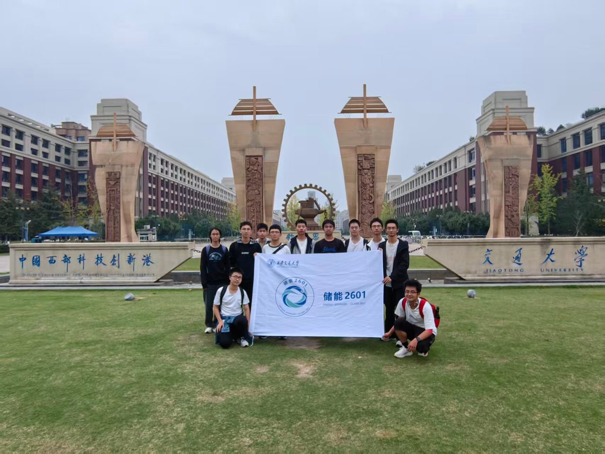
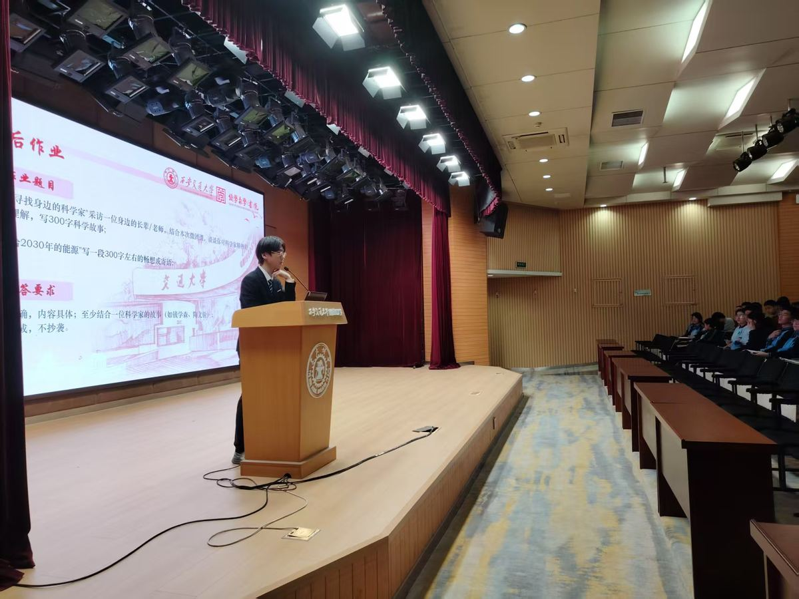
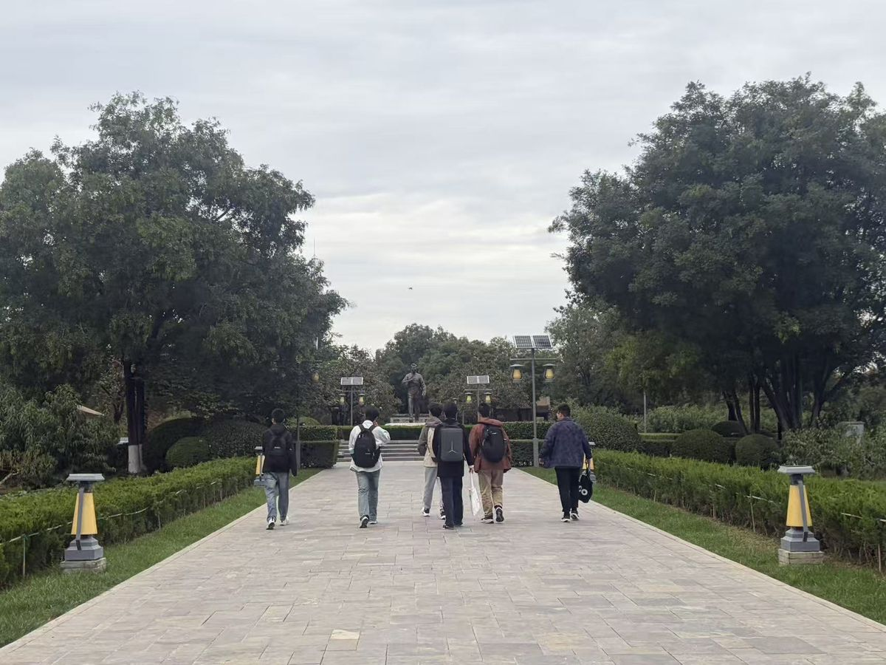

以历史照见初心，
以专业走向实践
储能2601团支部以“储百卅之光，能万里新程”为主题，将校史学习、自我成长、协作服务与专业探索贯穿团日活动。我们走进场馆与实验室，也走进中学课堂和社会实践现场，在具体经历中理解青年责任。
认识我们的支部 →把学习带到现场
更多活动影像 →在科研平台认识专业，在中学课堂分享所学，在实地研学中读懂历史。

专业探索 · 从课堂到科研现场
新港观储能平台，实地悟科创新知
创新港国家储能平台参观
走进储能研究室，观察电池、氢储能与热质储能装置，在设备与测量中认识专业学习的具体问题。
阅读活动记录 →
青年宣讲 · 从学习到分享
重返附中，传薪筑梦
赴西安交大附中《弘扬科学家精神》团课
以科学家故事和储能科普走进中学课堂，将专业认识整理成面向学弟学妹的讲述。
阅读活动记录 →
行走研学 · 从史料到现场
踏访富平寻根，缅怀先辈铸魂
关中革命纪念馆与习仲勋陵园红色研学
走进关中革命纪念馆与故居，结合展陈、文献和人物经历理解革命传统与群众工作。
阅读活动记录 →24处地图标注
14组地区足迹
27个家乡地点